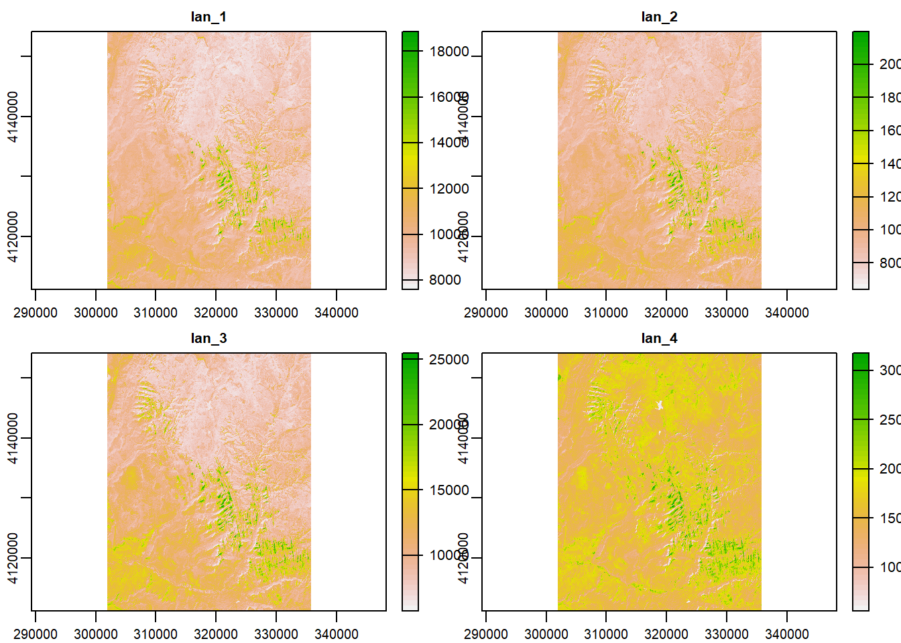
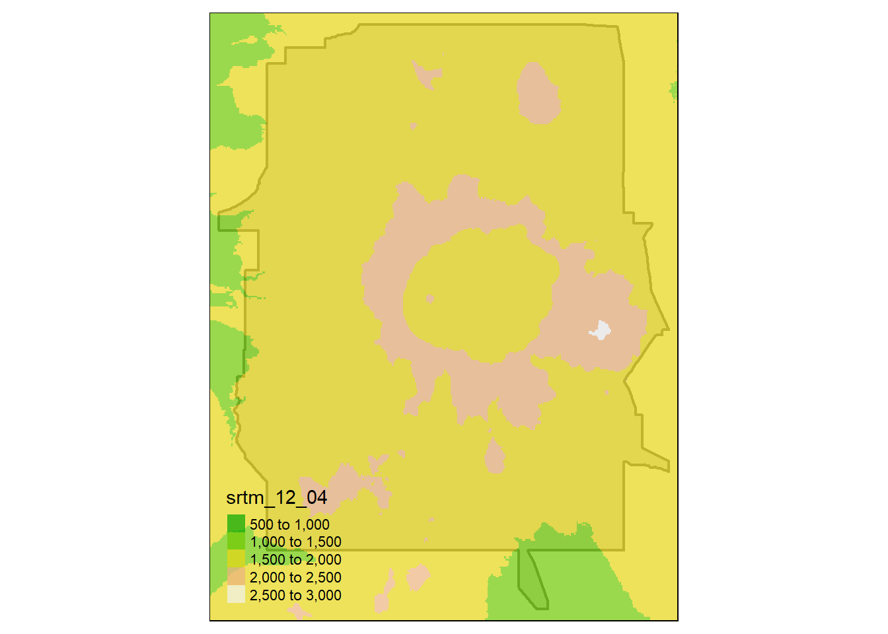

Chapter 5 Raster data
Support for gridded data in R in recent year has been best implemented with the raster package by Robert Hijmans. The raster package allows you to:
- read and write almost any commonly used raster data format using
rgdal - perform typical raster processing operations such as resampling, projecting, filtering, raster math, etc.
- work with files on disk that are too big to read into memory in R
- run operations quickly since the package relies on back-end C code
The terra package is the replacement for the raster package and has now superceeded it and we will largely focus on terra here. Examples here draw from both Spatial Data Science with R and terra and An introduction to terra in Geocomputation with R. Use help(“terra-package”) in the console for full list of available terra functions and comparison to / changes from raster.
Raster representation is currently in flux a bit in R now with three choices of packages - raster and now terra which we’ve mentioned, as well as stars (spatiotemporal tidy arrays with R).
To familiarize ourselves with the terra package, let’s create an empty SpatRaster object - in order to do this we have to:
* define the matrix (rows and columns)
* define the spatial bounding box
Note that typically we would be reading raster data in from a file rather than creating a raster from scratch. Run through code steps below to familiarize yourself with constructing a RasterLayer from scratch - you can provide a different bounding box for an area of your choosing.
library(terra)
myrast <- rast(ncol=10, nrow = 10, xmax=-116,xmin=-126,ymin=42,ymax=46)
# str(myrast)
isS4(myrast)## [1] TRUEterra uses an S4 slot structure with a SpatRaster object. Simply typing the name of the SpatRaster gives a summary of the object at the console.
myrast## class : SpatRaster
## dimensions : 10, 10, 1 (nrow, ncol, nlyr)
## resolution : 1, 0.4 (x, y)
## extent : -126, -116, 42, 46 (xmin, xmax, ymin, ymax)
## coord. ref. : +proj=longlat +datum=WGS84 +no_defsterra has dedicated functions addressing each of these components:
- dim(my_rast) returns the number of rows, columns and layers
- ncell() returns the number of cells (pixels)
- res() returns the spatial resolution
- ext() returns spatial extent
- crs() returns the coordinate reference system
5.0.1 Challenge
Exploring raster objects
- what is the minimal data required to define a
SpatRaster? - What is the CRS of our
SpatRaster? - How do we pull out just the CRS for our r
SpatRaster? - Building on this, what is the code to pull out just our xmin value in our extent, or bounding box?
5.0.1.1 Answer
- number columns, number rows, and extent - the
rasterpackage however will fill in defaults if values aren’t provided
t <- rast()
t## class : SpatRaster
## dimensions : 180, 360, 1 (nrow, ncol, nlyr)
## resolution : 1, 1 (x, y)
## extent : -180, 180, -90, 90 (xmin, xmax, ymin, ymax)
## coord. ref. : +proj=longlat +datum=WGS84 +no_defsWe didn’t provide one -
terrauses defaultcrsof WGS84 if you don’t provide acrs
crs(myrast)## [1] "GEOGCRS[\"WGS 84\",\n DATUM[\"World Geodetic System 1984\",\n ELLIPSOID[\"WGS 84\",6378137,298.257223563,\n LENGTHUNIT[\"metre\",1]],\n ID[\"EPSG\",6326]],\n PRIMEM[\"Greenwich\",0,\n ANGLEUNIT[\"degree\",0.0174532925199433],\n ID[\"EPSG\",8901]],\n CS[ellipsoidal,2],\n AXIS[\"longitude\",east,\n ORDER[1],\n ANGLEUNIT[\"degree\",0.0174532925199433,\n ID[\"EPSG\",9122]]],\n AXIS[\"latitude\",north,\n ORDER[2],\n ANGLEUNIT[\"degree\",0.0174532925199433,\n ID[\"EPSG\",9122]]]]"ext(myrast)## SpatExtent : -126, -116, 42, 46 (xmin, xmax, ymin, ymax)# just grab xmin
ext(myrast)[1]## xmin
## -126# we can see that extent is actually a c++ object in the ptr slot of our spatRaster object
# str(myrast)
# names(myrast@ptr)
myrast@ptr$extent## C++ object <000000001945be40> of class 'SpatExtent' <0000000012d57160>5.0.2 Manipulating raster objects
So far we just have a container with no values (try plotting what we have so far) - let’s provide values to the cells using the runif function to derive random values from the uniform distribution
#show we have no values
hasValues(myrast)## [1] FALSEvalues(myrast) <- runif(n=ncell(myrast))
myrast## class : SpatRaster
## dimensions : 10, 10, 1 (nrow, ncol, nlyr)
## resolution : 1, 0.4 (x, y)
## extent : -126, -116, 42, 46 (xmin, xmax, ymin, ymax)
## coord. ref. : +proj=longlat +datum=WGS84 +no_defs
## source : memory
## name : lyr.1
## min value : 0.01856581
## max value : 0.9929261An important point to make here is that objects in the terra package (and previously in raster) can be either in memory or on disk - note the value for our spatRaster r of ‘source’. If this were a large raster on disk, the value would be the path to the file on disk.
myrast@ptr$inMemory## [1] TRUEhasValues(myrast)## [1] TRUEmyrast@ptr$nlyr() # we just have one layer in our object## [1] 1# or
nlyr(myrast)## [1] 1terra also provides plot method for it’s classes:
plot(myrast)
We can also overwrite the cell values for our raster:
values(myrast) <- 1:ncell(myrast)
values(myrast)## lyr.1
## [1,] 1
## [2,] 2
## [3,] 3
## [4,] 4
## [5,] 5
## [6,] 6
## [7,] 7
## [8,] 8
## [9,] 9
## [10,] 10
## [11,] 11
## [12,] 12
## [13,] 13
## [14,] 14
## [15,] 15
## [16,] 16
## [17,] 17
## [18,] 18
## [19,] 19
## [20,] 20
## [21,] 21
## [22,] 22
## [23,] 23
## [24,] 24
## [25,] 25
## [26,] 26
## [27,] 27
## [28,] 28
## [29,] 29
## [30,] 30
## [31,] 31
## [32,] 32
## [33,] 33
## [34,] 34
## [35,] 35
## [36,] 36
## [37,] 37
## [38,] 38
## [39,] 39
## [40,] 40
## [41,] 41
## [42,] 42
## [43,] 43
## [44,] 44
## [45,] 45
## [46,] 46
## [47,] 47
## [48,] 48
## [49,] 49
## [50,] 50
## [51,] 51
## [52,] 52
## [53,] 53
## [54,] 54
## [55,] 55
## [56,] 56
## [57,] 57
## [58,] 58
## [59,] 59
## [60,] 60
## [61,] 61
## [62,] 62
## [63,] 63
## [64,] 64
## [65,] 65
## [66,] 66
## [67,] 67
## [68,] 68
## [69,] 69
## [70,] 70
## [71,] 71
## [72,] 72
## [73,] 73
## [74,] 74
## [75,] 75
## [76,] 76
## [77,] 77
## [78,] 78
## [79,] 79
## [80,] 80
## [81,] 81
## [82,] 82
## [83,] 83
## [84,] 84
## [85,] 85
## [86,] 86
## [87,] 87
## [88,] 88
## [89,] 89
## [90,] 90
## [91,] 91
## [92,] 92
## [93,] 93
## [94,] 94
## [95,] 95
## [96,] 96
## [97,] 97
## [98,] 98
## [99,] 99
## [100,] 100You can access raster values via direct indexing or line, column indexing - take a minute to see how this works using raster r we just created - the syntax is:
myrast[i]
myrast[line, column]How is terra data storage unlike a matrix in R? You can create a matrix with same dimensions and values and compare if you want:
m <- matrix (1:100, nrow=10, ncol=10)
m[1,10]## [1] 91myrast[1,10]## lyr.1
## 1 10myrast[10]## lyr.1
## 1 105.0.3 Reading existing rasters on disk
raster_filepath = system.file("raster/srtm.tif", package = "spDataLarge")
my_rast = rast(raster_filepath)
nlyr(my_rast)## [1] 1plot(my_rast)
5.0.4 Multiband rasters
The spatRaster object in terra can hold multiple layers (similar to RasterBrick and RasterStack which were two additional classes in the raster package). These layers correspond to multispectral satellite imagery or a time-series raster.
landsat = system.file("raster/landsat.tif", package = "spDataLarge")
landsat = rast(landsat)
landsat## class : SpatRaster
## dimensions : 1428, 1128, 4 (nrow, ncol, nlyr)
## resolution : 30, 30 (x, y)
## extent : 301905, 335745, 4111245, 4154085 (xmin, xmax, ymin, ymax)
## coord. ref. : +proj=utm +zone=12 +datum=WGS84 +units=m +no_defs
## source : landsat.tif
## names : lan_1, lan_2, lan_3, lan_4
## min values : 7550, 6404, 5678, 5252
## max values : 19071, 22051, 25780, 31961plot(landsat)
5.0.5 Plotting rasters and vectors with tmap
Bring in boundary and elevation of Crater Lake NP (datasets in Rspatialworkshop package) and plot with tmap
library(Rspatialworkshop)
library(terra)
library(tmap)
data(CraterLake)
raster_filepath <- system.file("extdata", "elevation.tif", package = "Rspatialworkshop")
elevation <- rast(raster_filepath)
map_crlk <- tm_shape(CraterLake) + tm_polygons(lwd = 2)
map_crlkel = map_crlk +
tm_shape(elevation) + tm_raster(alpha = 0.7,palette = terrain.colors(12)) + tm_layout(legend.position = c("left","bottom"),
legend.width = 1)
map_crlkel